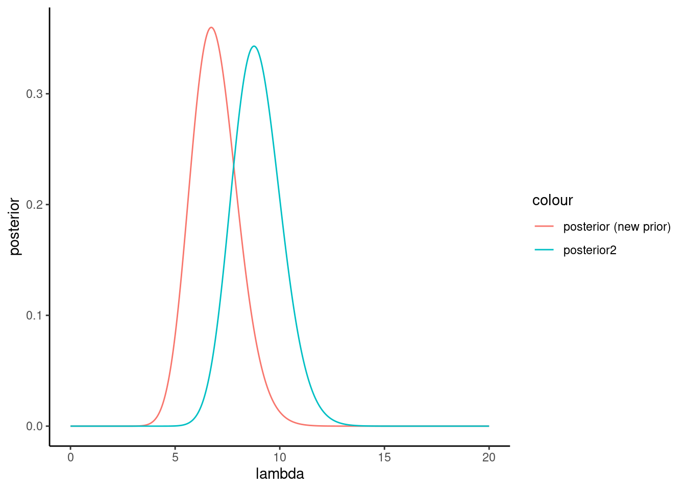

Chapter 10 Problem Sets
Problem 10.1 WHO’s reported novel disease outbreaks
Suppose that you are interested in modelling the number of outbreaks of novel diseases that the WHO reports each year. Since these outbreaks are of new diseases, you assume that you can model the outbreaks as independent events, and hence decide to use a Poisson likelihood, \(X_t ∼ Poisson ( λ )\) , where \(X_t\) is the number of outbreaks in year \(t\), and \(λ\) is the mean number of outbreaks.
Problem 10.1.1
You decide to use a \(Γ(3,0.5)\) prior for the mean parameter (\(λ\)) of your Poisson likelihood (where \(Γ( α , β )\) is defined to have a mean of \(α/β\)). Graph this prior.
Problem 10.1.2
Suppose that the number of new outbreaks over the past 5 years is \(X = ( 3 , 7 , 4 , 10 , 11 )\). Using the conjugate prior rules for a Poisson distribution with a gamma prior, find the posterior and graph it.
Problem 10.1.3
Generate 10,000 samples from the posterior predictive distribution, and graph the distribution. To do this we first independently sample a value \(λ_i\) from the posterior distribution, then sample a value of \(X\) from a \(Poisson( λ_i )\) distribution. We carry out this process 10,000 times. (Hint: use R’s rgamma and rpois functions to draw (pseudo-)independent samples from the gamma and Poisson distributions, respectively.)
samples <- replicate(1000, {
lambda <- rgamma(1, alpha + sum(X), beta + length(X))
rpois(1, lambda)
})
hist(samples)Problem 10.1.4
Compare the actual data with your 10,000 posterior predictive samples. Does your model fit the data?
Problem 10.1.6
The WHO issues a press release stating that the number of novel disease outbreaks for this year was 20. Use your posterior predictive samples to test whether your model is a good fit to the data.
sum(samples[samples > 20]) / length(samples)[1] 0Problem 10.1.7.
By using your previously determined posterior as a prior, update your posterior to reflect the new datum. Graph the PDF for this new distribution.
df$posterior2 <- dgamma(lambda, alpha + sum(X) + 20, beta + length(X) + 1)
df |>
ggplot() +
geom_line(aes(x=lambda, y=posterior, color = "posterior (new prior)")) +
geom_line(aes(x=lambda, y=posterior2, color = "posterior2")) +
theme_classic()
Problem 10.1.8
Generate posterior predictive samples from your new posterior and use it to test the validity of your model.
samples2 <- replicate(1000, {
lambda <- rgamma(1, alpha + sum(X) + 20, beta + length(X) + 1)
rpois(1, lambda)
})
hist(samples2)Problem 10.1.9
Would you feel comfortable using this model to predict the number of disease outbreaks next year?
Problem 10.2 Sleep-deprived reactions
These data are from a study described in Belenky et al. (2003) that measured the effect of sleep deprivation on cognitive performance. Eighteen subjects were chosen from a population of interest (lorry drivers) who were restricted to 3 hours of sleep during the trial. On each day of the experiment their reaction time to a visual stimulus was measured. The data for this example is contained in evaluation_sleepstudy.csv and consists of three variables, Reaction, Days and Subject ID, which measure the reaction time of a given subject on a particular day.
A simple model that explains the variation in reaction times is a linear regression model of the form:
\[ R ( t ) ∼ N ( α + β t , σ ) , \]
where \(R ( t )\) is the reaction time on day \(t\) of the experiment across all observations.
Problem 10.2.1
By graphing all the data, critically assess the validity of the model for the data.
A simple graph of the time against reaction time is a first starter here. From this it looks like there may be some heteroscedasticity (higher variance) at later times.
Problem 10.2.2
Graph the data at the individual subject level. What does this suggest about assuming a common \(β\) across all participants?
From an examination of the data at this level it is clear that there is considerable variability in the performance of the participants. As such, any attempts to lump the data together and apply a single analysis to it are going to suffer from considerable participant-level biases.
Problem 10.2.3
The above model has been fitted to the data using MCMC, with 2000 samples from the posterior distribution for \(( α , β , σ )\) contained in the file evaluation_sleepPosteriors.csv. Generate samples from the posterior predictive distribution, and visualise them in an appropriate way.
These are shown in Figure 1. It is important here to show the time aspect of the data; just lumping it all together in a histogram misses the point.
Problem 10.2.4
How does the posterior predictive data compare with the actual data?
The key here is to look at the data at the subject level. Averaging over all subjects makes it look like our model is doing ok, but this masks the (sometimes) very poor performance at the individual subject level.
Problem 10.2.5
How (if at all) do the posterior predictive checks suggest we need to change our model?
Hierarchical model where we allow there to be inter-subject variability in the effect of sleep deprivation on reaction time (\(β\)).
Problem 10.3 Discoveries data
Problem 10.3.1
The file evaluation_discoveries.csv contains data on the numbers of ‘great’ inventions and scientific discoveries in each year from 1860 to 1959. The aim of this problem is for you to build a statistical model that provides a reasonable approximation to this series. As such, you will need to choose a likelihood, specify a prior on any parameters, and go through and calculate a posterior. Once you have a posterior, you will want to carry out posterior predictive checks to see that your model behaves as desired.
Problem 10.4 Marginal likelihood of voting
Suppose that we collect survey data where respondents are asked to indicate for whom they will vote in an upcoming election. Each poll consists of a sample size of 10 and we collect the following data on the number voting for a particular candidate for 20 such polls: \(\{2, 7, 4, 5, 4, 5, 6, 4, 4, 4, 5, 6, 5, 7, 6, 2, 4, 6, 6, 6\}\). We model each outcome as having been obtained from a \(X_i ∼ B(10, θ )\) distribution.
Problem 10.4.1
Find the posterior distribution where we specify \(θ ∼ beta ( a ,1)\) as a prior. Graph how the posterior changes for \(a ∈[1,10]\).
a <- 1:10
b <- 1
X <- c(2, 7, 4, 5, 4, 5, 6, 4, 4, 4, 5, 6, 5, 7, 6, 2, 4, 6, 6, 6)
N <- 10
theta <- seq(0,1,.01)
df <- data.frame(a, b) |> rowwise() |> mutate(posterior=list(data.frame(theta, pdf=dbeta(theta, a+sum(X), b+10*length(X)-sum(X))))) |> unnest(posterior) |> mutate(a=factor(a))
df2 <- df |> group_by(a, theta) |> summarize(prob_data = prod(dbinom(X, N, theta))*pdf, .groups = 'drop') |> group_by(a) |> summarize(prob_data = mean(prob_data))df |> ggplot() + geom_line(aes(x=theta, y=pdf, color=a)) + theme_classic() +
scale_color_manual(values = brewer.pal(length(a) , name = "Spectral")) +
labs(x=TeX("$P(\\theta | X, a, b)$"), title="posterior") +
theme(
plot.title = element_text(color = "blue", hjust = 0.5))Problem 10.4.2
Graph the marginal likelihood as a is increased between 1 and 10 (just use integer values).
df2 |> ggplot() +
geom_point(aes(x=a, y=prob_data), color="blue") +
theme_classic() +
labs(y="P(X)")Problem 10.4.3
Calculate the Bayes factor where we compare the model when \(a = 1\) to that when \(a = 10\). Hence comment on the use of Bayes factors as a method for choosing between competing models.
TODO